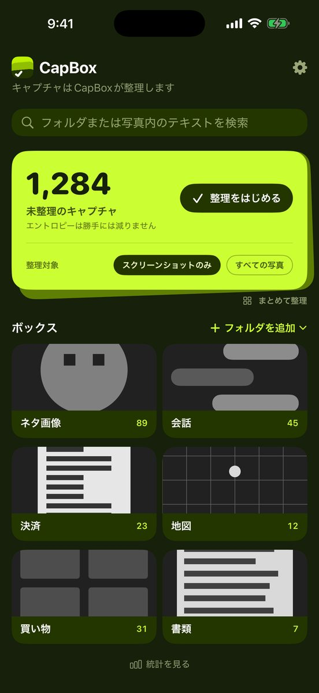
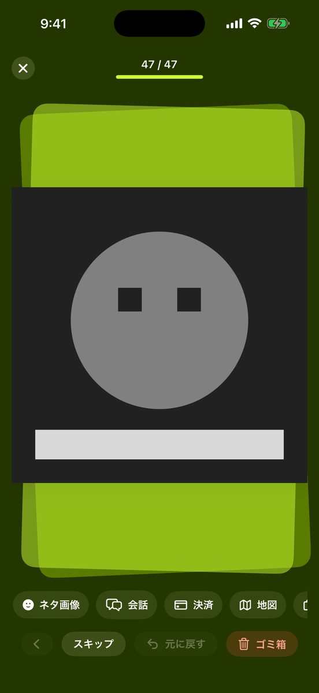
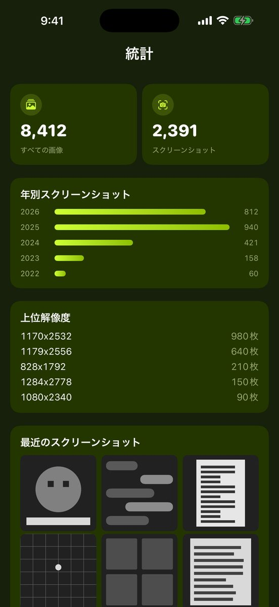

LINEで保存したネタ画像、ネット注文の確認画面、お店を探して撮ったGoogleマップ — カメラロールにごちゃ混ぜになったスクショを、1枚ずつめくってフォルダへ。不要なものはゴミ箱にまとめて一括削除、あとから写真の中の文字で探せます。

未整理のキャプチャが何枚あるかを表示します。スクリーンショットだけ、またはすべての写真から選べます。
1枚ずつ左右にめくり、下のフォルダをタップするだけ。まとめて選んで一括で送ることも。不要なものはゴミ箱へ。
フォルダは写真アプリの「CapBox」フォルダ内の本物のアルバム。CapBoxを削除しても、整理した結果はそのまま残ります。
文字の認識も検索も、すべてiPhoneの中で処理します。サーバーがないので送信先もありません。登録もアプリ内課金もありません。
ネタ画像・会話・決済・地図・買い物・書類の基本セットから始めるか、作ってあるアルバムを取り込めます。名前・色・アイコンはいつでも変更できます。


不要なスクショはゴミ箱へ。確認してから、まとめて一度に削除できます。間違えて入れたものは復元も可能。
キャプチャ内の文字を端末内で認識。フォルダ内の写真も未整理のスクショも、書いてあった文字で探せます。日本語・韓国語・英語・繁体字中国語に対応。
写真アプリで作ってあるアルバムを、CapBoxのフォルダとして取り込んで続きから整理できます。
カードを1枚ずつめくって整理も、複数選択して一括でフォルダへ送ることもできます。
年ごとに何枚たまったか、どの解像度が多いかがひと目でわかります。
日本語・韓国語・英語・繁体字中国語。アプリ表示も文字検索も。
エントロピーは勝手には減りません。
App Storeで近日公開。iPhoneで無料、アプリ内課金なし。